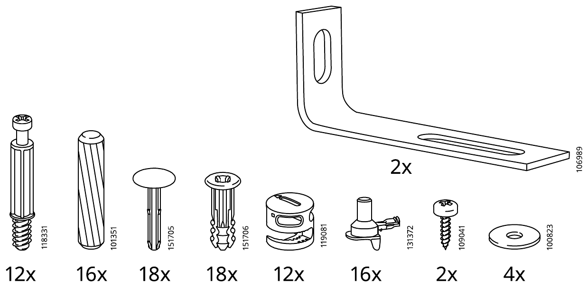
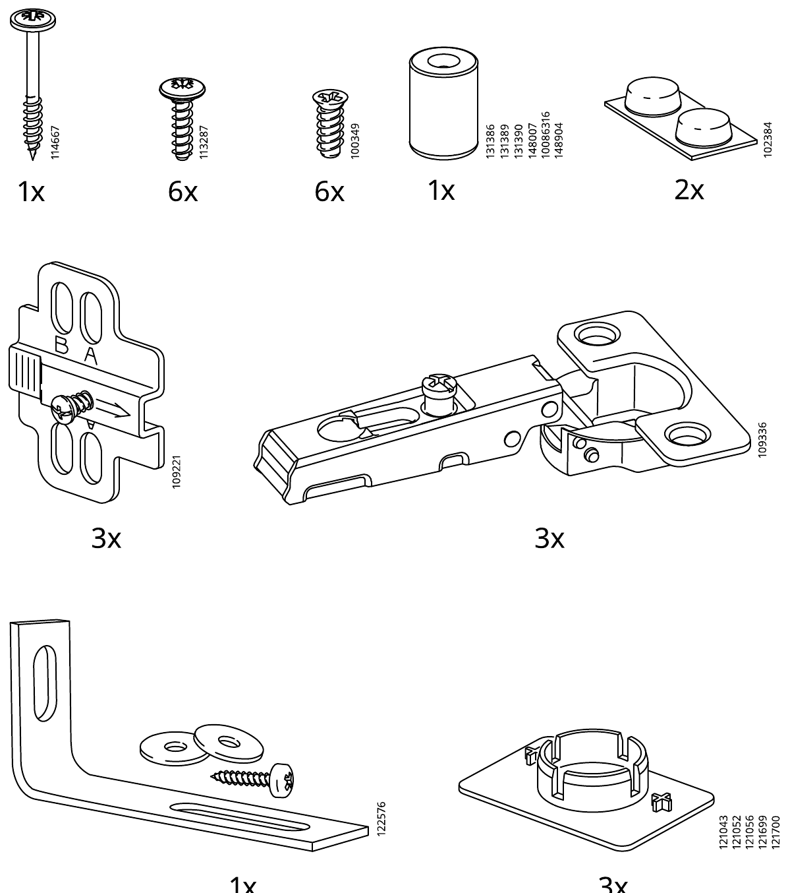
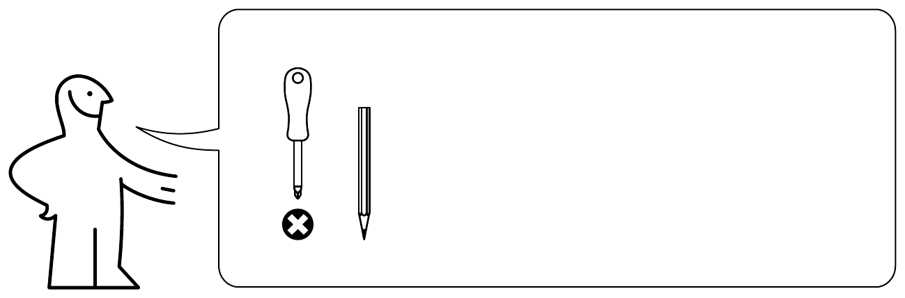

AA-2289108-3 · AA-1003271-12 · 19 步 · 2 个书柜 + 4 扇门
BILLY OXBERG 组装助手
示意动画，比例为估算，孔位和方向以下方说明书原图为准。拖动画面可旋转，点一下可放大局部。连续播放时，抽屉只演示一次。
柜体靠墙的位置有踢脚线吗？
回答由 Claude 根据本步原图和说明生成，可能出错。关键位置请再看原图。
虚拟格子
请把零件按上面的位置摆在软垫或托盘上，不需要实体格子。大板件说明书没有编号，暂不在格子内。
局部放大
开工前清点
数量来自说明书第 4–6 页。螺丝和连接件已和各步用量逐项核对。勾选后保存在这台设备上。
| 到齐 | 编号 | 数量 | 袋 | 用在 |
|---|



开工前先看
必须把每个书柜和每扇门的支架固定到墙上，否则会倾倒。墙螺丝不随货提供，要按墙体另买。
- 工具：一字螺丝刀、十字螺丝刀、铅笔、尺，说明书工具图上还有锤子。
- 在软垫上操作，避免板面和玻璃损伤。
- 全程不要用电钻拧连接件和锁扣。
- 每层搁板最大承重 30 公斤。
需要留意这份书柜说明书和转角组合用的不同：12 步，背板用塞子固定，不用钉子。两个书柜之间没有连接步骤。
本工具不是宜家官方产品，也不能替代随货说明书。